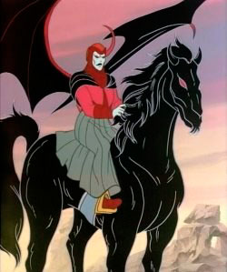

O Mestre dos Magos representa o mestre de uma mesa de RPG, ele é o guia do grupo nesse curioso mundo mágico de Caverna do Dragão. Não se sabe o seu nome verdadeiro e muito disso se deve a como ele nunca é claro sobre o que sabe ou não.
Porém, ele é o equilíbrio entre ordem e caos, sempre sabendo para onde enviar os seus pupilos. Entre algumas particularidades do personagem, está o seu amuleto cuja real extensão das suas habilidades é desconhecida.
Vingador é o grande antagonista dessa saga. Um feiticeiro maléfico, opressor e com grandes habilidades místicas, mas há muito tempo atrás foi uma boa pessoa. Sua grande missão é dominar o Reino e derrotar Tiamat e, para isso, almeja as armas dos garotos para ampliar seus poderes.
No roteiro do último episódio da animação, descobrimos que o Vingador é filho do Mestre dos Magos, corrompido após seguir os ensinamentos de outro mestre maligno.
Mesmo com Vingador sendo o principal vilão, Tiamat é uma das ameaças mais constantes do universo de Caverna do Dragão. Essa entidade é um deus-dragão de cinco cabeças, com cada uma representando as raças de dragões cromáticos da primeira versão de D&D: vermelho, azul, verde, preto e branco.
Tiamat vive no Cemitério dos Dragões, servindo como guardião dos ossos dos antigos dragões que ali se dirigiam para morrer. Também protege algumas armas mágicas, como as que o Mestre dos Magos deu aos garotos.
Uni é o fofíssimo mascote do grupo, um filhote fêmea de unicórnio aparentemente órfã. Ela tem um afeto especial por Bobby e já salvou o garoto de diversas enrascadas. Muito disso se deu por conta de seus poderes mágicos, como sua capacidade de se teletransportar pelo menos uma vez ao dia.
Hank é o arqueiro e líder do grupo de protagonistas. Com uma relação próxima com Sheila, ele sente culpa por ele e seus amigos estarem presos no Reino. Seu arco é capaz de criar flechas energéticas que podem ser esticadas, dobradas e, até mesmo, utilizadas como uma corda.

Eric é o cavaleiro do grupo. Com quinze anos, filho de pais ricos, tem uma personalidade arrogante e egoísta, constantemente se colocando em primeiro lugar em relação aos demais.
Por isso, o personagem sempre coloca o grupo em perigo. Por sorte, ele possui um escudo capaz de criar campos de força que o permite proteger uma pequena área em seu entorno.
A garota ruiva do grupo é a ladina, isto é, a ladra da equipe. Com sua capa da invisibilidade, Sheila é uma carta surpresa nas missões enfrentadas pelo grupo. Com ela, a garota é capaz de se esgueirar pelos lugares e surpreender os inimigos ou roubar itens.
Irmã mais velha de Bobby, Sheila sempre está tentando protegê-lo dos perigos do Reino. Outra habilidade que vale ser mencionada é que ela compreende a língua das fadas.
Com apenas oito anos, Bobby é o bárbaro da equipe. Irmão caçula de Sheila, ele é impetuoso e inconsequente, colocando o grupo em perigo diversas vezes em suas jornadas.
Sua principal arma é um tacape, cujo golpe é capaz de quebrar pedras e criar pequenos abalos sísmicos. O rapaz odeia ser tratado como criança e possui um vínculo forte com Uni, sendo capaz de compreender o que o unicórnio diz.

Presto é o mago do grupo. Seu nome verdadeiro é Albert e sempre está tentando ajudar o grupo com seu chapéu mágico. Infelizmente, o poder do mesmo não foi completamente dominado por Presto, o que significa que, às vezes, tentar tirar comida do chapéu pode resultar em uma vaca surgindo no meio do grupo.
O que combina com sua personalidade insegura e desastrada. Muito tímido, o mago costuma ser motivo de chacota para o grupo, especialmente Eric, mas no fim do dia, sempre é capaz de mostrar o seu valor.
Diana é a acrobata do time. Mais especificamente, sua classe no D&D é a de "ladra-acrobata", similar a de Sheila. Muito confiante e centrada, a garota sempre está disposta a "se jogar" para resolver qualquer situação que se desenrola à sua frente.
Sua principal arma é um bastão, usado para seus saltos e acrobacias. Tão flexível e mágico quanto as flechas de Hank, o mesmo pode ser reconstituído quando quebrado.